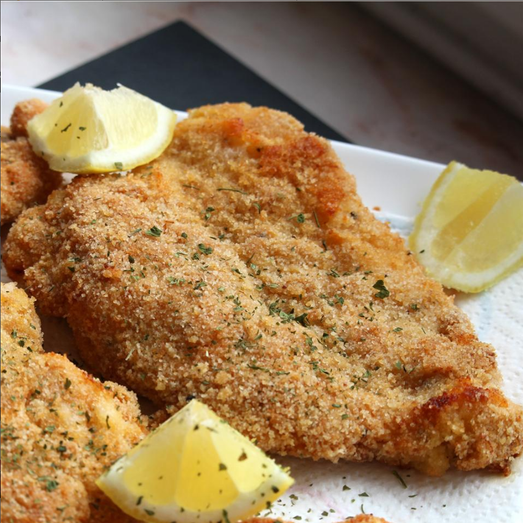

Schnitzel

Nutrition facts
Per Serving:
383 calories; protein 33.1g; carbohydrates 40.2g; fat 9.1g; cholesterol 127mg; sodium 809.8mg.
Ingredients
- 1 tablespoon olive oil, or as desired
- 6 chicken breasts, cut in half lengthwise (butterflied)
- salt and ground black pepper to taste
- ¾ cup all-purpose flour
- 1 tablespoon paprika
- 2 eggs, beaten
- 2 cups seasoned bread crumbs
- 1 large lemon, zested
Directions
- Preheat oven to 425 degrees F (220 degrees C).
Line a large baking sheet with aluminum foil and drizzle olive oil over foil. Place baking sheet in preheated oven.
- Flatten chicken breasts so they are all about 1/4-inch thick. Season chicken with salt and pepper.
- Mix flour and paprika together on a large plate. Beat eggs with salt and pepper in a shallow bowl.
Mix bread crumbs and lemon zest together on a separate large plate. Dredge each chicken piece in flour mixture,
then egg, and then bread crumbs mixture and set aside in 1 layer on a clean plate. Repeat with remaining chicken.
- Remove baking sheet from oven and arrange chicken in 1 layer on the sheet. Drizzle more olive oil over each piece of coated chicken.
- Bake in the preheated oven for 5 to 6 minutes. Flip chicken and continue baking until no longer pink in the center and the breading is lightly browned,
5 to 6 minutes more. An instant-read thermometer inserted into the center should read at least 165 degrees F (74 degrees C).
Home